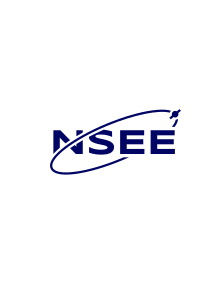
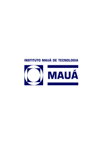

NSEE — Núcleo de Simulação de Empresas e Empreendedorismo — is a student organization at Mauá Institute of Technology, founded to foster entrepreneurial culture among engineering and administration students.
Through workshops, mentoring programs, business simulations, and real-world projects, we help our members develop practical skills that bridge academic knowledge with the demands of modern business.
We partner with professors, industry professionals, and startups to deliver a rich ecosystem where ideas become reality.


Space camera and spectrometer simulators for ESA missions, hardware virtualisation, and ground station infrastructure.
Machine learning applied to oncology, assisted reproduction, ECG interpretation, and causal inference in health data.
Black hole mass determination, James Webb data analysis, exoplanet detection, and galactic nucleus classification.
Software and graphical interfaces for GMT subsystem monitoring, 3D visualisation of mirror data, and computational support for GMTO.